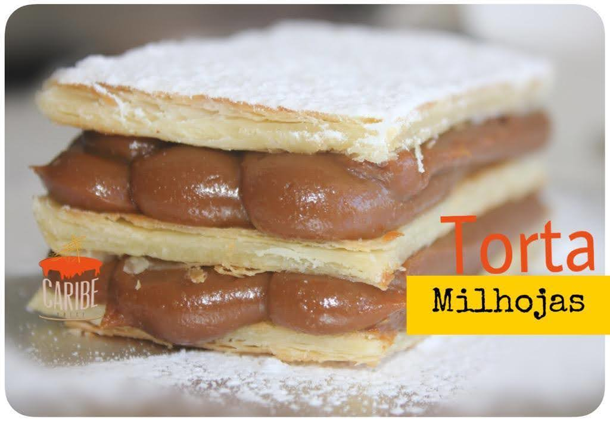
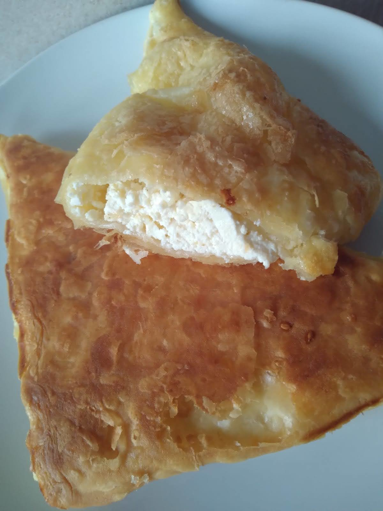
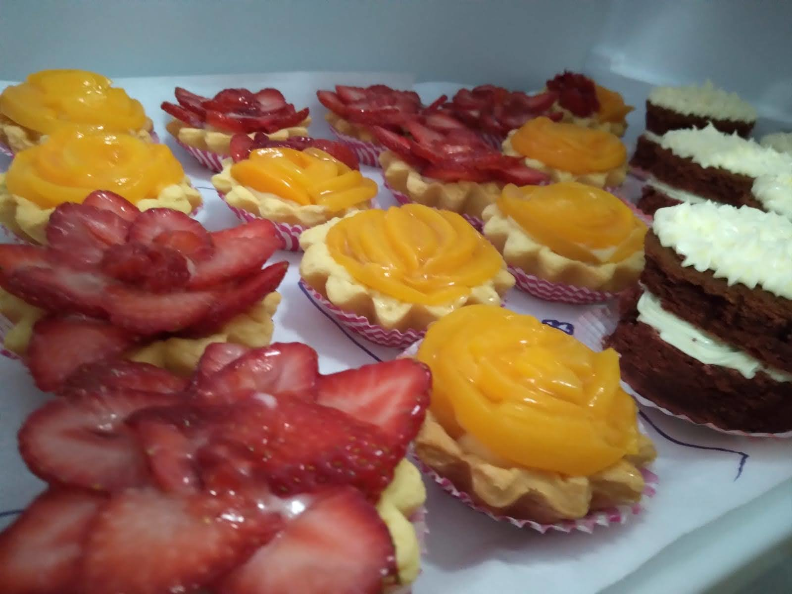

Postre y delicateses para deleitar tu alma, exaltar ocasiones especiales y mucho más!.
No dudes en expornernos tus expectativas que gustosamente nos esmeraremos en excederla.
Podras ordenar el postre de tu preferencia o cualquier otro gusto culinario que puedas requerir.
Para nuestro equipo, será un inmenso placer brindarle nuestra experticia.
Nuestro postres más pedidos




